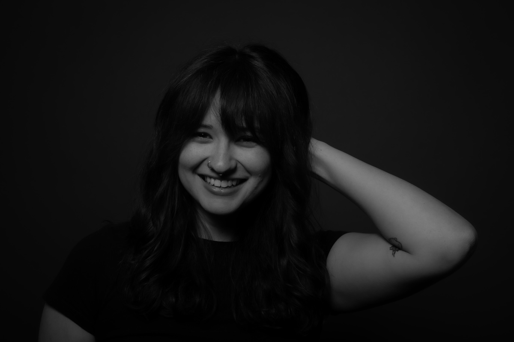
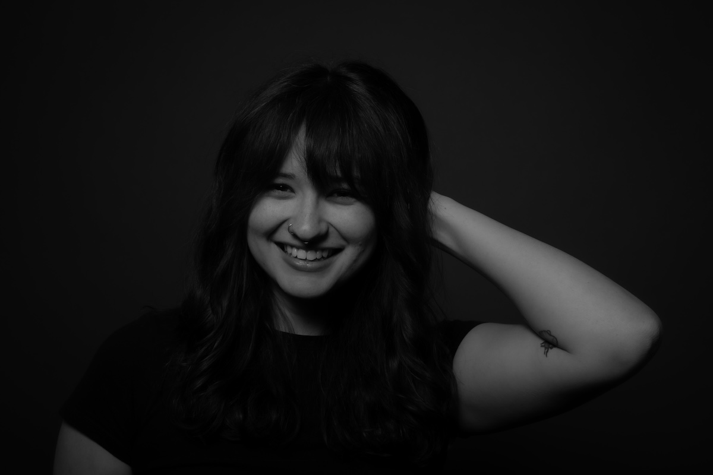

Portraits
This quarter I spent some time experimenting with portrait photography.
Even in a totally controlled setup — same lights, same backdrops, same camera — every person brought something different to the frame.
Some of my favorites are from sessions where we explored light wrapping, head-and-shoulder framing, and classic 45-degree setups.
The smallest shifts — in posture, lens, or even expression — made huge changes to the final shot.
Sometimes the best portraits weren’t even the most “correct.” They just felt real.
 
